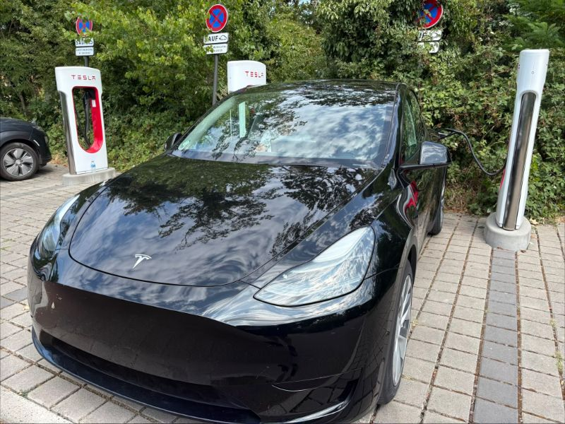

Van een Tesla-rijder uit België
Hoi, ik ben Tim. Bestel je een Tesla? Gebruik gerust mijn referral link.
Ik rijd zelf met een Model Y uit 2024. Bestel je via mijn link, dan krijg jij de bonus die Tesla op dat moment aan nieuwe kopers geeft, en krijg ik van Tesla wat credits. Je betaalt geen cent meer voor je auto.

ts.la is de officiële korte link van Tesla — je komt gewoon op tesla.com uit.
Dit is een persoonlijke pagina, geen webshop: geen cookies, geen tracking, geen advertenties.
Hoe het werkt
Tesla beloont klanten die iemand doorverwijzen, en geeft de nieuwe koper meestal ook iets: een korting, gratis Supercharger-kilometers of credits. Wat het precies is, hangt af van het land en verandert om de paar maanden. Ik ga hier dus geen bedrag beloven dat volgende maand niet meer klopt — het actuele bedrag staat op Tesla's eigen referral-pagina, de link vind je hieronder.
-
Open eerst de referral link
Start je configuratie via https://ts.la/tim588947. De code wordt automatisch aan de sessie gekoppeld. Heb je de auto al samengesteld? Plak dan de code tim588947 in het referral-veld op de bestelpagina.
-
Controleer het vóór je de bestelkost betaalt
De referral moet gekoppeld zijn op het moment dat je de bestelling bevestigt. Zoek de referral-regel in je besteloverzicht, of open de Tesla-app en bekijk de details van je bestelling.
-
Claim de beloning na levering
Credits en Supercharger-kilometers verschijnen in je Tesla-account zodra de auto geleverd en de bestelling afgerond is. Een korting wordt daarentegen meteen van het bestelbedrag afgetrokken.
Referrals gelden normaal enkel voor nieuwe voertuigen. Voorraadwagens, demo's en sommige lease- of bedrijfsconstructies kunnen uitgesloten zijn — de referral-voorwaarden van Tesla vermelden wat op dit moment geldt.
Hoe het rijden me bevalt
Ik rijd een Model Y uit 2024 en doe er gemiddeld zo'n 10.000 kilometer per jaar mee. Het is gewoon zalig om mee te rijden, en een pak minder stresserend dan mijn vorige wagens — zeker in de file. Aan one-pedal driving ben je na een paar dagen gewend, en daarna wil je niet meer anders.
Laden doe ik bijna altijd thuis. Snelladen komt er enkel aan te pas als we met de auto op vakantie gaan, en dat gaat vlot en eenvoudig; met de Tesla-laadpas werkt het even goed aan laadpalen van derden — je moet die kaart daarvoor wel eerst activeren in de Tesla-app. Thuis hangt er een Smappee aan de installatie, die ik zo kan instellen dat er enkel geladen wordt wanneer de zon schijnt — met zonnepanelen op het dak kost rondrijden me in de zomer zo goed als niets.
In de winter merk je het verschil wel: mijn auto staat altijd buiten, en dan verlies ik ongeveer 90 kilometer actieradius. Daar hou ik gewoon rekening mee. De app op je telefoon maakt veel goed — je vindt je auto altijd terug, en je kan hem voorverwarmen of afkoelen voor je vertrekt.
Vond je dit nuttig en ga je bestellen? Dan doe je me een plezier door mijn link te gebruiken. Jou kost het niets.
- 10.000 km per jaar, gemiddeld
- −90 km actieradius in de winter, de auto staat buiten
- Thuis laad ik bijna altijd, liefst op zon
Veelgestelde vragen
Wat levert de Tesla referral code mij als koper op?
Tesla bepaalt de beloning per land en past ze regelmatig aan. Afhankelijk van de lopende campagne kan het gaan om een korting op de aankoopprijs, gratis Supercharger-kilometers, of credits die je in de Tesla-app kan besteden. Kijk op de officiële referral-pagina van Tesla welk bedrag in België geldt op de dag dat je bestelt — deze site kan geen concreet bedrag beloven.
Hoe pas ik de referral code toe op mijn Tesla-bestelling?
Open de referral link vóór je je auto configureert, of plak de code in het referral-veld op de bestelpagina. De code moet ingevuld zijn vóór je bevestigt en de bestelkost betaalt. Controleer daarna of de referral in je besteloverzicht of in de Tesla-app bij je bestelgegevens staat.
Kan ik een referral code nog toevoegen ná mijn bestelling?
Nee. Tesla telt alleen een referral die gekoppeld was op het moment van bestellen. Zodra de bestelling bevestigd is, staat het referral-veld vast en kan de klantendienst er geen code meer aan toevoegen. Heb je nog niet besteld, gebruik dan eerst de link.
Kost het gebruik van een referral code mij iets?
Nee. Je betaalt exact dezelfde prijs voor de auto. Het referral-programma is Tesla's eigen marketing: de koper krijgt de huidige bonus en de doorverwijzer krijgt credits van Tesla. Er is geen extra kost en geen tussenpersoon.
Werkt de referral code ook buiten België?
De code zelf is niet landgebonden, de beloning wel: Tesla voert het programma per markt, dus wat je in Nederland, Frankrijk of Duitsland krijgt kan verschillen van België, en in sommige markten ligt het programma stil. Check de referral-pagina van Tesla voor je leveringsland vóór je bestelt.
Werkt mijn Tesla-laadpas ook bij andere laadpalen?
Ja. Je moet de kaart wel eerst activeren in de Tesla-app; daarna verloopt laden bij andere aanbieders vlot. Doe die activatie op je gemak thuis, en niet pas aan de laadpaal waar je ze nodig hebt.
Klaar om te bestellen?
Gebruik de link, of typ de code tim588947 in het referral-veld.